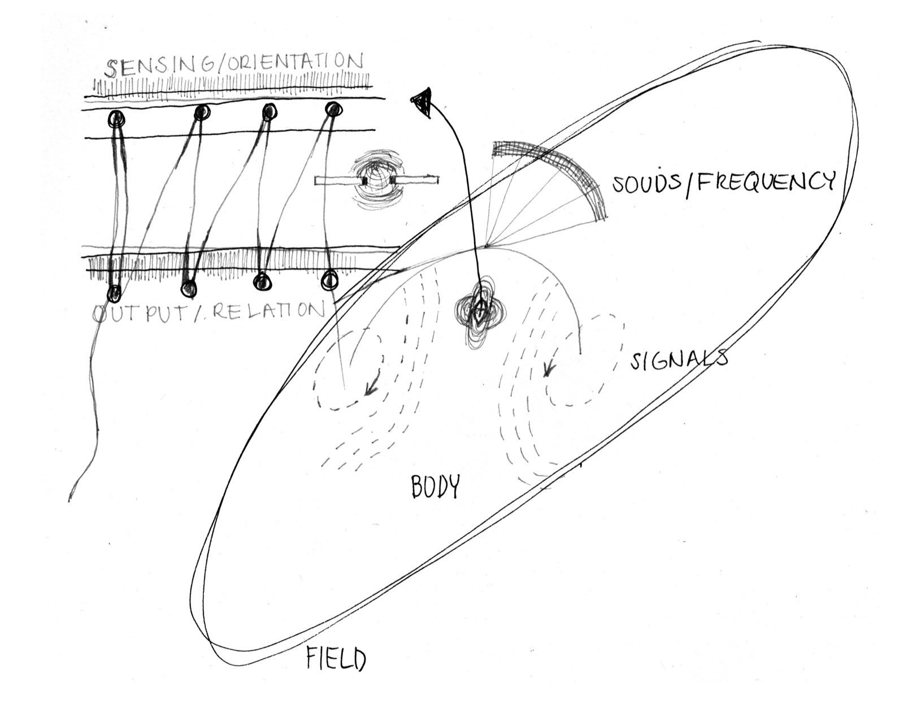
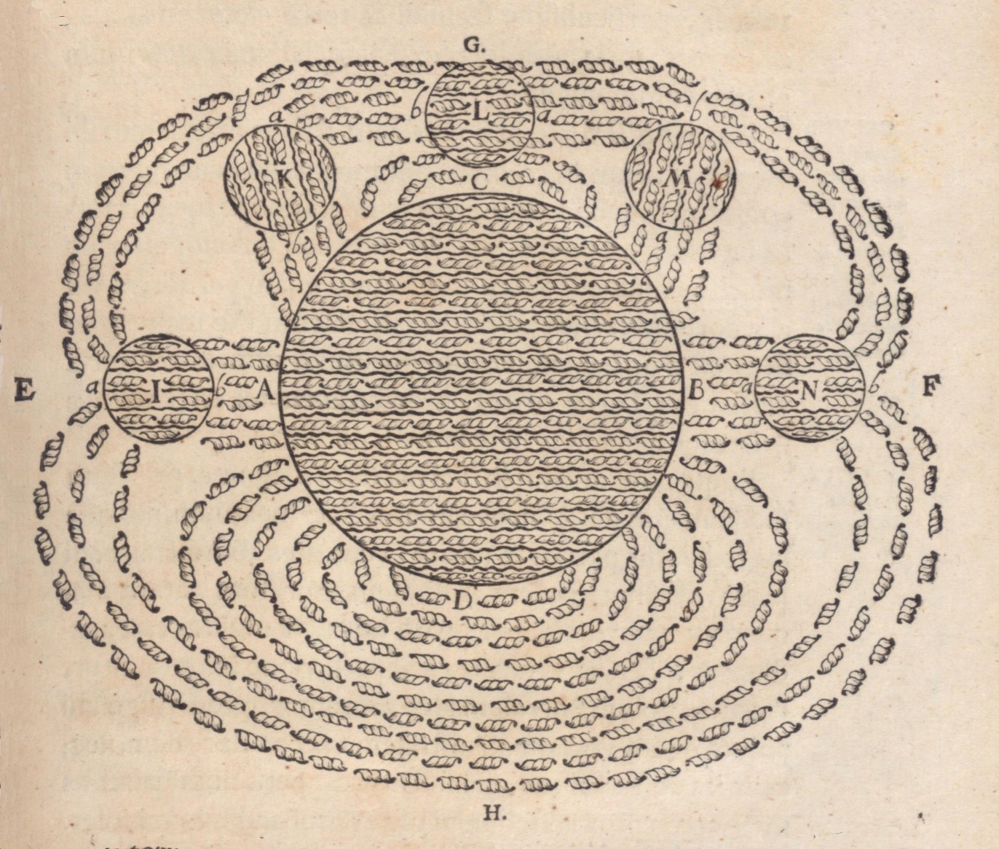
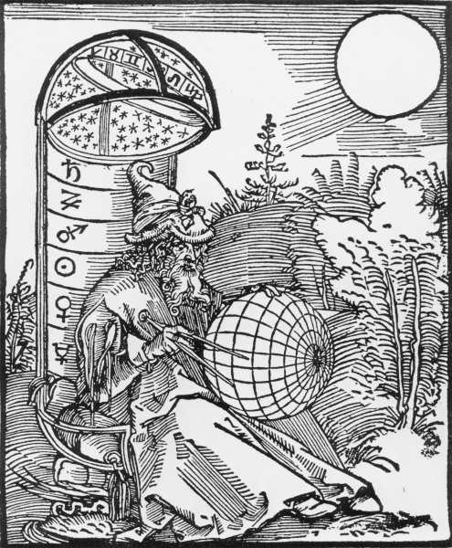

Workshop
Imaginative Story Exchange: From Individual Narratives to Collective Worldbuilding



Program introduction
The workshop is based on the exchange of personal stories, which gradually develops into a practice of imagination. It begins with everyday experience, mutual listening, and empathy, and then expands toward speculative perspectives beyond the human. Through storytelling, retelling, drawing, and collective writing, participants explore how individual experiences can shift when they are shared, reinterpreted, and connected to other bodies, environments, and forms of life.
Rather than treating imagination as an escape from reality, the workshop approaches it as a tool for extending perception, questioning habitual perspectives, and rehearsing other ways of relating.
The method is informed by the principles of Narrative 4, an international organisation centred on story exchange as a practice of empathy and perspective-taking, with which the facilitator has collaborated for several years. Building on this method, the workshop gradually moves from the exchange of individual stories toward collective authorship and speculative worldbuilding.
- Participants
- Participation is onsite only. The workshop is held in English, so being able to speak and write in English is highly recommended. An AI text translation tool will be available for support.
Workshop flow
Workshop flow
Introduction
The workshop begins with a short introduction to its structure, the principles of story exchange, and the shared rules of listening. Participants are introduced to the idea of attentive listening without interruption, interpretation, or immediate response.
Story Exchange in Pairs
Participants divide into pairs and each person shares a personal story related to the theme finding a direction. The emphasis is not on telling an extraordinary story, but on paying attention to the concrete details of experience: places, objects, gestures, sounds, textures, emotions, or encounters that shaped the moment.
Retelling
The group comes back together. Each participant retells their partner’s story in the first person, speaking as “I.” The goal is not an exact reconstruction. Instead, participants temporarily inhabit another person’s perspective and allow someone else’s experience to pass through their own voice and body. The exercise introduces a slight displacement of authorship: the story still belongs to someone, but it is now carried, interpreted, and articulated by another person.
The retelling asks what happens when an experience travels between bodies. What changes? What remains? Which details become more visible, and which disappear?
Maps Without Territories
Participants form small groups and create a collective map. Rather than representing a geographical territory, the map traces relations, movements, forces, memories, and connections. Each participant contributes fragments from the story they retold, translating them into words, drawings, symbols, lines, diagrams, or abstract marks. A sound might become a repeated pattern; a moment of hesitation might become a crossing of lines; a person, object, or place might become a point of attraction around which other elements gather.
Characters may disappear, locations may merge, perspectives may shift, and human experiences may gradually become environmental or more-than-human ones. A story that began as one person’s private experience has now travelled through another person, entered a collective map, merged with other narratives, and returned as a shared speculative environment.